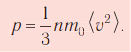
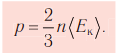
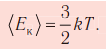
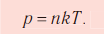
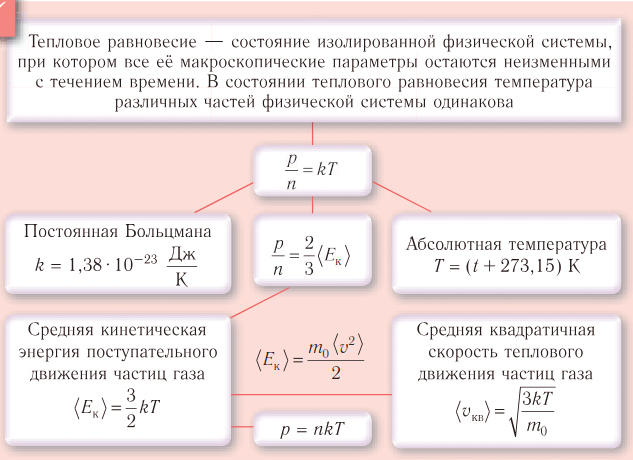
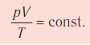
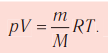

Нет данных.
Справочный материал, математика

Cоотношения между синусом, косинусом, тангенсом и тангенсом одного и того же угла , тригонометрические тождества
Какое тождество устанавливает связь между косинусом и тангенсом одного и того же угла? Вы уже наверняка знаете, что тождественный — это равный. Основные тригонометрические тождества — это равенства, которые устанавливают связь между синусом, косинусом, тангенсом и котангенсом одного угла. Это значит, что любую из этих функций можно найти, если известна другая функци

Функция y = sin x. Свойства и график
Определение. Зависимость, при которой каждому действительному числу x соответствует значение sin x, называется функцией y = sin x
1. Областью определения функции y = sin x является множество всех действительных чисел, так как для любого x пренадлежит R существует sin x.
2. Графически это означает, что для любой абсцис- сы найдется точка графика функции y = sin x
3.Множеством значений функции y = sin x является промежуток [-1; 1], так как ординаты точек единичной окружности (значения синусов чисел) изменяются от -1 до 1. Графически это означает, что график функции y sin x расположен в полосе между прямыми y = -1 и y = 1

Физика
Молекулярная физика — раздел физики, в котором изучают свойства тел и происходящие в них процессы, связанные с огромным числом частиц, со- держащихся в этих телах.
Тепловое движение — беспорядочное движение частиц вещества, интен- сивность которого зависит от температуры тела.
Броуновское движение — беспорядочное движение взвешенных* в жид- кости или газе мельчайших нерастворимых твёрдых частиц размерами поряд- ка 1 мкм и меньше.
Диффузия — процесс взаимного проникновения частиц соприкасающихся веществ между частицами другого вещества вследствие их теплового движения.
Концентрация частиц — физическая величина, численно равная числу ча- стиц, содержащихся в единичном объёме:
n = N/V
§ 2. Масса и размеры молекул. Количество вещества
v = N/Na(авагадра)
M = m/v
Поснение за буквы в формулах
v — количество вещества
N - число частиц вещества
Na(авагадра) - постоянная Авогадро
М — молярная масса
m — масса вещества
m0 — масса молекулы вещества
§ 3. Макро- и микропараметры. Идеальный газ. Основное уравнение молекулярно-кинетической теории идеального газа
Идеальный газ. Для теоретического объяснения свойств газов используют их упрощённую модель — идеальный газ. Идеальный газ — модель газа, удовлетворяющая следующим условиям: 1) молекулы газа можно считать материальными точками, которые хаотически движутся; 2) силы взаимодействия между молекулами идеального газа практи- чески отсутствуют (потенциальная энергия их взаимодействия равна нулю); си- лы действуют только во время столкновений молекул, причём это силы оттал- кивания.
 § 4. Тепловое равновесие. Температура — мера средней кинетической энергии теплового движения частиц вещества/h3>
<Тепловое равновесие — состояние изолированной физической системы, при котором все её макроскопические параметры остаются неизменными с те- чением времени./p>   
§ 5. Уравнение состояния идеального газа
Состояние макроскопической системы полностью определено, если известны её макроскопические параметры — давление p, масса m, температура T и объ- ём V. Уравнение, связывающее параметры данного состояния, называют урав- нением состояния системы. Изменение параметров состояния системы с те- чением времени называют процессом.
Уравнение состояния в виде (5.5) впервые получил русский учёный Д. И. Менделеев (1834–1907) в 1874 г., поэтому его называют уравнением Клапейрона–Менделеева
Химия
Заголовок статьи 2
Содержимое второй статьи.
Контакты
Свяжитесь с нами по электронной почте:nkgtoffical@gmail.com